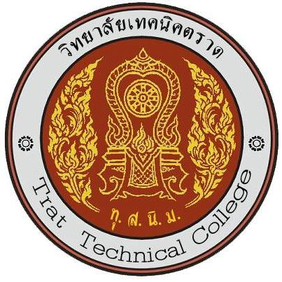

<!DOCTYPE html>
<html lang="en">

<head>
    <meta charset="utf-8">
    <meta name="viewport" content="width=device-width, initial-scale=1.0">
    <link href="../css/bootstrap.min.css" rel="stylesheet">
    <link rel="stylesheet" href="../css/style.css">
    <link href="https://fonts.googleapis.com/css2?family=Sarabun:wght@300&display=swap" rel="stylesheet">
    <title>Dev1-bootstrap</title>
</head>

<body>
    <!-- 1.Start NavBar -->
    <nav class="navbar navbar-expand-lg navbar-dark sticky-top" style="background-color: #457b9d;">
        <div class="container">

            <a class="navbar-brand" href="../index.html">นายชนันธร</a>
            <!-- Button -->
            <button class="navbar-toggler" type="button" data-bs-toggle="collapse"
                data-bs-target="#navbarSupportedContent" aria-controls="navbarSupportedContent" aria-expanded="false"
                aria-label="Toggle navigation">
                <span class="navbar-toggler-icon"></span>
            </button>
            <!-- End Button -->

            <!-- Navbar Link -->
            <div class="collapse navbar-collapse" id="navbarSupportedContent">
                <ul class="navbar-nav ms-auto mb-2 mb-lg-0">
                    <li class="nav-item">
                        <a class="nav-link active" aria-current="page" href="../index.html">Home</a>
                    </li>
                    <li class="nav-item">
                        <a class="nav-link" href="../pages/about.html">เกี่ยวกับ</a>
                    </li>
                    <li class="nav-item">
                        <a class="nav-link" href="../pages/profile.html">ประวัติเรา</a>
                    </li>
                    <li class="nav-item">
                        <a class="nav-link" href="../pages/gallery.html">ภาพความทรงจำ</a>
                    </li>
                    <li class="nav-item">
                        <a class="nav-link" href="../pages/contact.html">ติดต่อเรา</a>
                    </li>
                    <li class="nav-item dropdown">
                        <a class="nav-link dropdown-toggle" href="#" id="navbarDropdown" role="button"
                            data-bs-toggle="dropdown" aria-expanded="false">
                            Link
                        </a>
                        <ul class="dropdown-menu" aria-labelledby="navbarDropdown">
                            <li><a class="dropdown-item" href="https://trattc.ac.th/">วท.ตราด</a></li>
                            <li><a class="dropdown-item" href="https://www.vec.go.th/">อาชีวศึกษา</a></li>
                            <li>
                                <hr class="dropdown-divider">
                            </li>
                            <li><a class="dropdown-item" href="https://www.moe.go.th/">กระทรวง ศึกษาธิการ</a></li>
                        </ul>
                    </li>
                </ul>
            </div>
        </div>
    </nav>
    <!-- End NavBar -->

    <!-- -------------------------------------------------------------------------- -->

    <section class="section">
        <div class="container-fluid">
            <h3 class="main-header text-center">เกี่ยวกับเรา</h3>
            <div class="underline mx-auto"></div>
        </div>
    </section>

    <section class="section border-top" style="background-color: #f2f2f2;">
        <div class="container-fluid3">
            <div class="row m-3"> 
                <div class="col-md-9 mb-3">
                    <div class="card shadow p-3">
                        <div class="card-body">
                            <h3 class="main-heading">วิสัยทัศน์/พัทธกิจ/ยุทธศาสตร์</h3>
                            วิสัยทัศน์ พันธกิจ ของวิทยาลัยเทคนิคตราด
                            <div class="underline"></div>

                            <h4>วิสัยทัศน์</h4>
                            <p>
                                &nbsp;&nbsp;&nbsp;&nbsp; มุ่งผลิตและส่งเสริมคุณภาพนักเรียน นักศึกษา ให้ความรู้ ความชำนาญ
                                ทางวิชาการและวิชาชีพเพื่อสนองตอบความต้องการของชุมชนและสถานประกอบการ
                            </p>

                            <h4>พันธกิจ</h4>
                            <p>
                                &nbsp;&nbsp;&nbsp;&nbsp;เป็นสถานศึกษาที่มุ่งเน้นผลิตและพัฒนากำลังคนในระดับกึ่งฝีมือ
                                ฝีมือเทคนิคและระดับเทคโนโลยี ให้ความรู้ ความสามารถ มีความชำนาญทางวิชาชีพได้มาตรฐาน
                                และมีคุณภาพ
                                ซึ่งมีความพร้อมที่จะให้บริการวิชาชีพแก่ชุมชนและท้องถิ่นเพื่อพัฒนาเครือข่ายการเรียนรู้ทางวิชาชีพให้กว้างขวาง
                                และหลากหลายรูปแบบตลอดจนสืบสาน อนุรักษณ์คุณธรรม วัฒนธรรม
                                ประเพณี ภูมิปัญญาท้องถิ่นของไทยให้ยั่งยืนตลอดไป
                            </p>
                            <hr>
                            <h4>ปรัชญา</h4>
                            <p>"ล้ำเลิศวิชาการ ชำนาญงานฝีมือ ยึดถือคุณธรรม"</p>

                            <h4>เอกลักษณ์วิทยาลัยเทคนิคตราด</h4>
                            <p>"ทักษะเลิศล้ำ นำวิชาการ บริการชุมชน"</p>

                            <h4>อัตลักษณ์วิทยาลัยเทคนิคตราด</h4>
                            <p>"เก่ง ดี มีจิตอาสา"</p>
                        </div>
                    </div>
                </div>

                <div class="col-md-3 text-center">
                    <div class="card shadow">
                        <div class="card-header text-white " style="background-color: #457b9d;">
                            <h3>
                                
                                เพจวิทยาลัยเทคนิคตราด
                            </h3>
                        </div>
                        <div class="card-body">
                            <div id="fb-root"></div>
                                <script async defer crossorigin="anonymous"src="https://connect.facebook.net/th_TH/sdk.js#xfbml=1&version=v11.0" nonce="ZQqNmoU9"></script>
                                <div class="fb-page" data-href="https://www.facebook.com/งานประชาสัมพันธ์-วิทยาลัยเทคนิคตราด-355826091452821" data-tabs="timeline" data-width="500px" data-height="" data-small-header="false" data-adapt-container-width="true" data-hide-cover="false" data-show-facepile="true">
                                <blockquote cite="https://www.facebook.com/งานประชาสัมพันธ์-วิทยาลัยเทคนิคตราด-355826091452821"class="fb-xfbml-parse-ignore"><ahref="https://www.facebook.com/งานประชาสัมพันธ์-วิทยาลัยเทคนิคตราด-355826091452821">งานประชาสัมพันธ์วิทยาลัยเทคนิคตราด</ahref=></blockquote>
                            </div>
                        </div>
                    </div>
                </div>
            </div>
        </div>
    </section>

    <section class="section border-top">
        <div class="container-fluid">
            <div class="row m-3">
                <div class="col-md-4 text-center mb-3">
                    <div class="card shadow p-3">
                        <h3 class="main-heading">วิทยาลัยเทคนิคตราด</h3>
                            <div class="underline mx-auto"></div>
                        <div class="card-body">
                            <h3>ปรัชญา</h3>
                            <p>"ล้ำเลิศวิชาการ ชำนาญงานฝีมือ ยึดถือคุณธรรม"</p>
                            <hr>
                            <h3>เอกลักษณ์วิทยาลัยเทคนิคตราด</h3>
                            <p>"ทักษะเลิศล้ำ นำวิชาการ บริการชุมชน"</p>
                            <hr>
                            <h3>อัตลักษณ์วิทยาลัยเทคนิคตราด</h3>
                            <p>"เก่ง ดี มีจิตอาสา"</p>
                        </div>
                    </div>
                </div>

                <div class="col-md-4 mb-3">
                    <div class="card">
                        <div class="card-body">
                            <h3 class="main-heading">แผนที่วิทยาลัยเทคนิคตราด เขต 1</h3>
                            <hr>
                            <div class="mapouter"><div class="gmap_canvas"><iframe src="https://www.google.com/maps/embed?pb=!1m18!1m12!1m3!1d3898.9729622629216!2d102.52020301526636!3d12.250108933611303!2m3!1f0!2f0!3f0!3m2!1i1024!2i768!4f13.1!3m3!1m2!1s0x310443fa46595d57%3A0xb62aa26e87239503!2z4Lin4Li04LiX4Lii4Liy4Lil4Lix4Lii4LmA4LiX4LiE4LiZ4Li04LiE4LiV4Lij4Liy4LiU!5e0!3m2!1sth!2sth!4v1630471193104!5m2!1sth!2sth" width="600" height="450" style="border:0;" allowfullscreen="" loading="lazy"></iframe></div><style>.mapouter{position:relative;text-align:right;width:100%;height:300px;}.gmap_canvas {overflow:hidden;background:none!important;width:100%;height:100%;}.gmap_iframe {height:400px!important;}</style></div>
                        </div>
                    </div>
                </div>

                <div class="col-md-4 mb-3">
                    <div class="card">
                        <div class="card-body">
                            <h3 class="main-heading">แผนที่วิทยาลัยเทคนิคตราด เขต 2</h3>
                            <hr>
                            <div class="mapouter"><div class="gmap_canvas"><iframe src="https://www.google.com/maps/embed?pb=!1m18!1m12!1m3!1d3898.2844703832893!2d102.48294541526663!3d12.296619732654781!2m3!1f0!2f0!3f0!3m2!1i1024!2i768!4f13.1!3m3!1m2!1s0x31044302f26a0c5b%3A0xcac807192dcf4a53!2z4Lin4Li04LiX4Lii4Liy4Lil4Lix4Lii4LmA4LiX4LiE4LiZ4Li04LiE4LiV4Lij4Liy4LiUIOC5gOC4guC4lTI!5e0!3m2!1sth!2sth!4v1630470945280!5m2!1sth!2sth" width="600" height="450" style="border:0;" allowfullscreen="" loading="lazy"></iframe></div><style>.mapouter{position:relative;text-align:right;width:100%;height:300px;}.gmap_canvas {overflow:hidden;background:none!important;width:100%;height:100%;}.gmap_iframe {height:400px!important;}</style></div>
                        </div>
                    </div>
                </div>

            </div>
        </div>
    </section>

    <!-- -------------------------------------------------------------------------- -->

    <!-- 6.Start Section Footer -->
    <section class="section footer bg-dark text-white">
        <div class="container">
            <div class="row">

                <div class="col-md-4">
                    <h3>Company Information</h3>
                    <hr />
                    <ul type="square">
                        <li>วิทยาลัยเทคนิคตราด</li>
                        <li>480 หมู่ 9 ถนนสุขุมวิท ต.วังกระแจะ อ.เมือง จ.ตราด</li>
                    </ul>
                </div>

                <div class="col-md-4">
                    <h3>Quick Link</h3>
                    <hr />
                    <ul type="square">
                        <li>
                            <div><a href="../index.html">Home</a></div>
                        </li>
                        <li>
                            <div><a href="../pages/about.html">About</a></div>
                        </li>
                        <li>
                            <div><a href="../pages/contact.html">Contact</a></div>
                        </li>
                        <li>
                            <div><a href="../pages/profile.html">Profile</a></div>
                        </li>
                    </ul>
                </div>

                <div class="col-md-4">
                    <h3>Contact Information</h3>
                    <hr />
                    <ul type="square">
                        <li>
                            <div>
                                <p class="text-white mb-1">480 หมู่ 9 ถนนสุขุมวิท ต.วังกระแจะ อ.เมือง จ.ตราด 23000</p>
                            </div>
                        </li>
                        <li>
                            <div>
                                <p class="text-white mb-1">trat.ac.th@gmail.com</p>
                            </div>
                        </li>
                        <li>
                            <div>
                                <p class="text-white mb-1">039-518-105</p>
                            </div>
                        </li>
                    </ul>
                </div>

            </div>
        </div>
    </section>
    <!-- End Section Footer -->
    <script src="../js/bootstrap.bundle.min.js"></script>
</body>

</html>